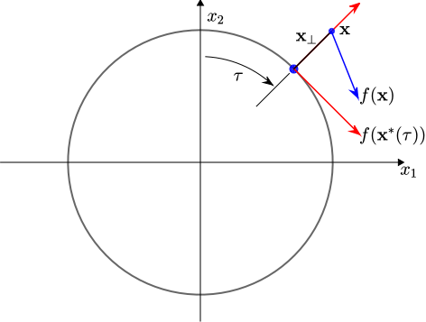
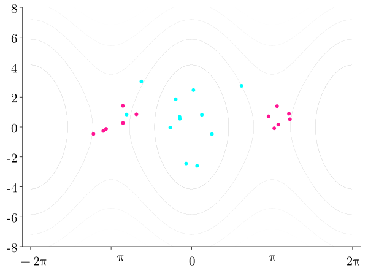
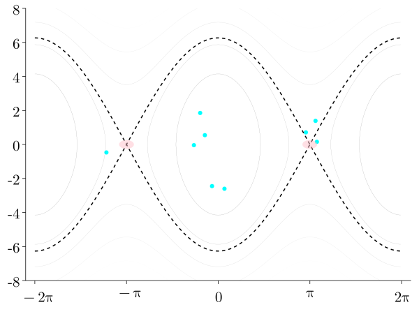
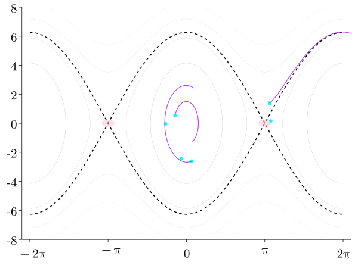
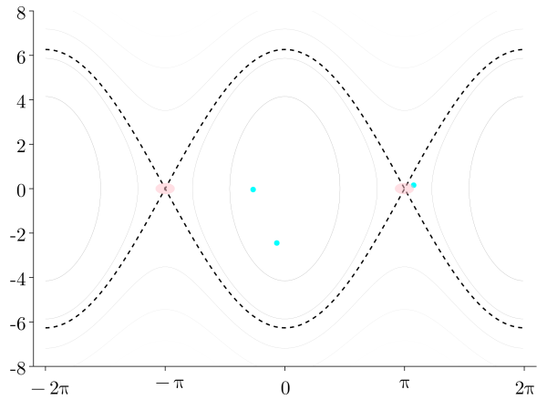

exhibit both continuous state flow and discrete state transitions
E.g. Room temperature control, contact-rich robots
We tackle two main challenges in the control of contact-rich robots
Walking machines
Manipulators
Challenge 1: Mode Changes
Contacts cause mode changes
Each mode has distinct dynamics
Switching control does not scale well
It is difficult to parameterize the switching condition
Challenge 1: Proposed Method
Our method uses data-driven technique to automatically learn a mixture of expert controller and the switching conditionals
We infer contact-aware controllers by training on trajectories generated from contact models
Contact-aware controllers minimize the adverse effects of contacts or leverage the potential contacts to their advantage
Challenge 2: Operating under Uncertain Conditions
Challenge 2: Existing Methods
Reinforcement learning
Strengths
More general
Unknown dynamics OK
Weaknesses
Sample complexity
Stability guarantees?
Bayesian Neural Passivity-based Control
Strengths
Stability guarantees
Closed-form policy
Reasons about model uncertainties
Robustness via Bayesian Learning
System Parameter Uncertainty and Measurement Noise
Less robust
More robust
Background
Passive System Theory and Passivity-Based Control (PBC)
Dissipativity
A dynamical system
is dissipative with respect to some supply rate if there exists a storage function such that
for all , all input , and all
Dissipativity
Dissipation Inequality
Stored energy at is at most equal to stored energy at , plus externally supplied energy
No generation of energy, only internal dissipation
With , trajectories tend towards minimum of
Passivity
The system is passive if it is dissipative with supply rate
It is output strictly passive if it is dissipative with supply rate
It is input strictly passive if it is dissipative with supply rate
Passive System Example
Kirchoff’s law
Let , integrate to obtain
Stability of Passive Systems
Lemma (Khalil, 2002)
The origin of is:
stable if is passive,
asymptotically stable if is output strictly passive,
globally asymptotically stable if is output strictly passive and the storage function as (radially unbounded)
Passivity-Based Control (PBC)
Main idea — Select that renders the closed-loop system passive.
Control problem is cast as a search for and s.t.
PBC Example - Simple Pendulum
System Dynamics
Choose that transforms system into a passive one with
PBC Example - Simple Pendulum
Control Synthesis via PBC
Choose that transforms system into a passive one with
Our Methods
NeuralPbc
NeuralIdaPbc
neural net
quadratic in
Sample state space
Sample configuration space
No stability certificate
Stability certificate
More flexible
As applicable as IdaPbc
Bayesian Learning
Show ELBO convergence.
KL-divergence and ELBO
Show prob. distribution
Prediction through marginalization
Theoretical Justification
Why does Bayesian Learning result in more robust controllers?
System Parameter Uncertainty
Scalar control system
Uncertain drift vector field: .
No measurement uncertainty
Performance Index
Quadratic performance index
,
: control horizon
Infinite-Horizon Best Performance
Solve for that minimizes : .
Deterministic
Probabilistic
Infinite-Horizon Best Performance
Deterministic
Probabilistic
Parameter Uncertainty and Measurement Noise
Same control system with measurement noise: .
Lemma
The conditional expectation of the performance index given the system parameter is
Conditional Expectation
Proof
Substituting the solution of the SDE into the performance measure yields
The conditional expectation of this quantity given the system parameter under the distribution induced by the Wiener process may be computed in closed-form using Ito calculus.
üüß
Optimal Controller
Optimal controller minimizing
Minimal expected cost
Optimal Controller
Optimal controller minimizing
Minimal expected cost
Optimal control parameter a nontrivial function of and .
Bayesian learning strikes the right trade-off.
NeuralPbc
Learning storage function from trajectories
Motivation
Control synthesis in PBC:
If underactuated, is not invertible
Choice of must satisfy nonlinear PDE
Quadratic potential most likely not viable
Incorporate performance objective into design of ?
NeuralPbc Problem Statement
Consider the mechanical system
Control task: stabilize desired equilibrium
Choosing a suitable is not trivial
Parameterize by a neural network , and relax control task to bringing to a small neighborhood of
NeuralPbc Problem Statement
Injecting control task into loss function design
Backprop through closed-loop trajectories
Sampling the state space efficiently
NeuralPbc Loss Function
where
is the flow of the equation of motion
is the closed-loop trajectory starting from
is the time horizon (hyperparameter)
NeuralPbc Loss Function
Set Distance Loss
Penalizes when closed-loop trajectory under the current control law is far away from a neighborhood of
* The set may be chosen as * A ball around * Estimated region of attraction * No additional loss if any point in is in
NeuralPbc Loss Function
Transversal Distance Loss
Measures how close is to (expert trajectory) using transverse coordinates

Coordinate transformation
a surrogate for time
quantify how far away the current state is from
By construction
No preferred orbit?
Backprop through ODE Solutions
We need , which depends ODE solutions
üòø Combining autodiff with numerical ODE solvers
üòø Adjoint sensitivity method: solve the adjoint problem backward in time
üò∫ Adjoint methods + autodiff implemented in DiffEqFlux.jl
NeuralPbc Sampling State Space
Learned policy need to perform well for a wide range of
Sample state space with technique based on DAgger1
Simulating system under application of
Collect samples from the regions of state-space visited by
NeuralPbc Algorithm üìâ




Bayesian Solution
Computing ELBO requires:
Likelihood:
Prior:
Uninformed
Deterministic
Comparison of Methods
Advantages ✔️ and Disadvantages ❌
Case
Deterministic
Bayesian
Robustness
❌
✔️
Computation cost
✔️
❌
Model selection
❌
✔️
Prior knowledge
✔️
✔️✔️
Overfitting
❌
✔️
Energy-Shaping Pendulum Swing-Up
Energy-Shaping Pendulum Swing-Up
Deterministic training vs. Bayesian training under parameter uncertainty and measurement noise.
Measurement noise: rad., rad/s.
NeuralPbc Experiments
Benchmark underactuated control problems:
Cart-pole
Inertia-Wheel Pendulum (IWP)
Acrobot
Learned storage function
Observations
has a local minimum at , control law commands the force in the expected direction
Comparison with Energy Shaping1
NeuralIdaPbc
Solving matching PDEs with neural networks
Motivation
NeuralPbc is flexible, but guaranteeing stability is hard
Additional structure of IdaPbc facilitates stability analysis
Closed-loop port-Hamiltonian dynamics:
IdaPbc Background
Stability results
With , we have
Control synthesis
Choose where
IdaPbc via Optimization
Infinite-dimensional—closed-form solution is difficult
NeuralIdaPbc
NeuralIdaPbc Problem Statement
Finite-dimensional search
Sample configuration space
Controller is a continuous function of
NeuralIdaPbc Constraints
Positive-definiteness of the desired mass matrix
Cholesky decomposition
Components of the lower-triangular matrix are outputs of a neural network
NeuralIdaPbc Constraints
Skew symmetry of
Decompose a square matrix into symmetric and skew-symmetric parts
Components of the square matrix are output of a neural network
NeuralIdaPbc Constraints
Boundedness of
bounded from below with isolated minimum at
Parameterize by a sums-of-square (SoS) polynomial
SoS Decomposition
Theorem (Choi, 1995)
A polynomial of degree has a SoS decomposition such that, with , we have
Example
NeuralIdaPbc Experiments
Followed the experiments performed in IdaPbc paper1
Inertia-wheel pendulum (IWP)
Ball-beam system
Simulated IWP experiments
Comparison of control effort expenditure
NeuralPbc
NeuralIdaPbc
IdaPbc
Deterministic vs. Bayesian Training
Performance metric: .
Simulated dynamics
Deterministic vs. Bayesian Training
Subtracting rings from the wheel
decreases wheel mass
decreases wheel and pendulum inertia
moves the center of mass
Parameter vector
Error
Nominal
3 rings
2 rings
1 rings
Ball-beam experiments
Conclusions
Closing Thoughts and Future Directions
PBC + machine learning techniques ✨
We uncovered the engineering foundations for combining them
Transparent connection to stability analysis (NeuralIdaPbc)
Extensive experimental results in simulation and on hardware
Future directions—applications in:
Dynamical models with uncertainity
Hybrid dynamical systems (walking machines)
Data-Driven Control Through Contact
Impacts and friction modelled through measure differential inclusions.
Usually solved through linear complementarity problems (convex optimization).
Data-driven PBC designed to be robust against uncertainties (e.g. surface friction).
Acknowledgments
Appendix
NeuralPbc Publications
This work is published in ISER 20201, CCTA 20212
NeuralPbc Publications
This work also provides a foundation for an ongoing research that investigate the improvement of robustness properties of NeuralPbc1,2
NeuralIdaPbc Publications
This work is published in the International Journal of Control1
NeuralIdaPbc is the basis for an ongoing research that investigate the improvement of robustness properties2
DiffEqFlux.jl Demo
Learning where is a neural network
Regress on MSE between trajectory of and data
NeuralIdaPbc Main Problem
NeuralIdaPbc
Solve nonlinear PDEs using neural networks and SoS polynomials
Surrogates of , , are constrained by construction
Pinn
Solve nonlinear PDEs using neural networks
Solution surrogates are constrained via penalty term in loss function